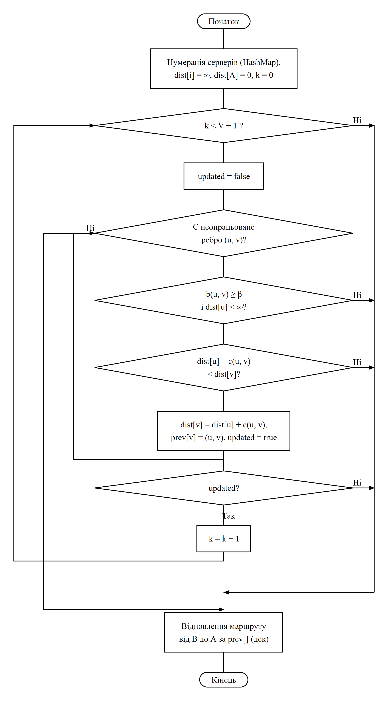
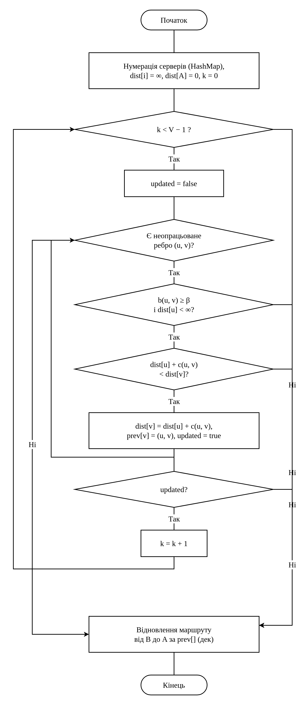

Одна й та сама схема — алгоритм Беллмана-Форда з вкладеними циклами — побудована двома незалежними способами. Обидві версії експортовані в PNG і JPEG.
| Критерій | Генератор SVG (Python) | draw.io |
|---|---|---|
| Жодних діагоналей поза 90° | Так — перевіряється скриптом | Так, але лише з явними точками маршруту |
| Жодного перетину ліній з блоками | Так — перевіряється скриптом | Так, але лише з явними точками маршруту |
| Підписи Так/Ні не накладаються | Так — мітка має власний зсув | Ні — на спільній шині накопичуються 5 «Ні» |
| Правильна фігура паралелограма | Так | Лише без perimeter=parallelogramPerimeter |
| Редагування мишею | Ні | Так |
| Відтворюваність результату | Один запуск — той самий результат | Потрібно вручну правити координати |
06_gost_bellman_ford_script.png)
check_orthogonal.py).06_gost_bellman_ford_drawio.png)
Для академічних схем точніший генератор SVG: він тримає 90° геометрію, не допускає перетинів із блоками й віддає однаковий результат при повторному запуску.
Для ручного редагування зручніший draw.io: фігури можна перетягувати, а схема лишається в одному редагованому файлі. Але кожну зміну треба перевіряти очима — автоматичної перевірки там немає.
Практичний висновок: малювати генератором, а надсилати в draw.io лише тоді, коли схему потрібно далі редагувати вручну.